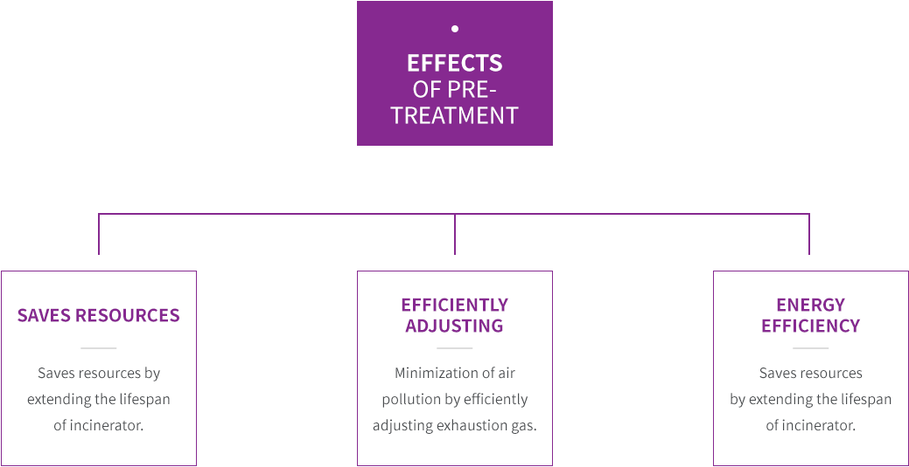

he forms of wastes are analyzed
T before/after receiving and analyzed data are pre-treated to prevent hazardous elements.
Pre-treatment is a new concept in waste treatment and operated to prevent fire,
ensure safety in waste treatment, and minimize environmental impact.
What is Pre-treatment?
Pre-treatment is a process where wastes are classified by form, method, and hazards for treatment
(pulverization, packaging, etc) and storage for safe and efficient incineration.
